【论文阅读】Heterogeneous Graph Neural Network via Attribute Completion
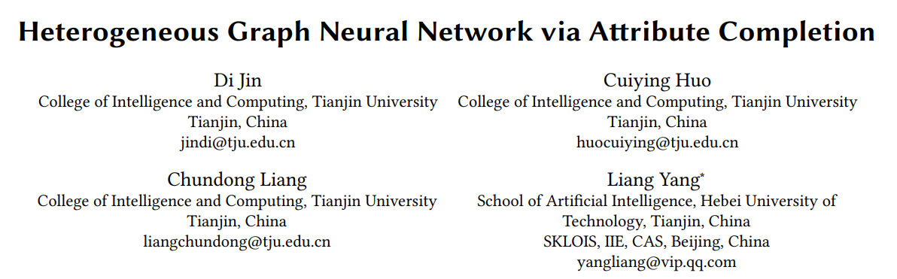
论文标题：基于属性补全的异质图神经网络
论文链接：https://doi.org/10.1145/3442381.3449914
论文发表：WWW2021
一、概述
异质图拥有多种类型的节点和边，相比于同质图包含更多的信息，能够更好的描述现实世界。已经有许多研究采用GNN的方法针对异质图进行研究，取得了很好的成果。但这些基于GNN的异质图模型需要所有的节点都具有属性特征。现实中，这种要求并不能够满足。
因为某些原因，一些节点并没有属性信息，例如带有个人敏感信息。在异质图中更加明显，我们通常不能得到所有类型节点的属性特征，这也影响到了GNN-based模型的性能。
我们将异质图的属性缺失分为两类: 1. 需要被分析的节点属性缺失，例如下图中DBLP数据集的author类型节点； 2. 不需要被分析的节点属性缺失，例如下图中IMDB数据集的actor类型节点。
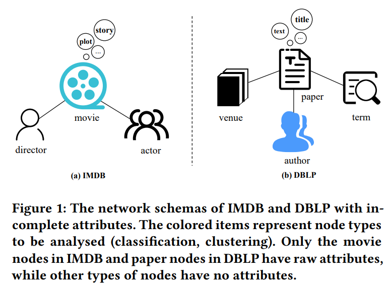
上图中只有DBLP的paper类型节点和IMDB的movie类型节点有属性，其余节点的属性缺失，我们需要对有图中有颜色的节点做预测。虽然有些节点没有属性，但是这些没有属性的节点会连接到有属性的节点。以往的研究都是采用手工的方式处理异质图中属性缺失的问题。在代码中，往往是采用一个one-hot向量来表示，这会提供一些无效的信息。
因此，本文提出一种节点属性补全的模型HGNN-AC。本文以节点间的拓扑关系为指导，通过对属性节点的属性进行加权聚合来补全无属性节点的属性。
HGNN-AC首先使用HIN-Embedding的方法来通过节点的拓扑关系来获取节点embedding，然后在进行加权聚合时通过attention机制来计算节点embedding之间的注意力系数，来区分不同节点的贡献。这种补全机制可以轻松的和现有的HIN模型结合，实现端到端训练。
## 二、概念 ### 1.异质图 一个异质图表示为 \(\mathcal{G}(\mathcal{V}, \mathcal{E}, F, R, \varphi, \phi)\) ，其中 \(\mathcal{V}\) 和 \(\mathcal{E}\) 分别表示节点和边的集合， \(F\) 和 \(R\) 分别代表节点类型集合和边的类型集合，满足 \(|F|+|R|>2\) ，每个节点 \(i \in \mathcal{V}\) 关联一个节点类型映射函数 \(\varphi: \mathcal{V} \rightarrow F\) ，每条边 \(e \in \mathcal{E}\) 关联一个边类型映射函数 \(\varphi: \mathcal{E} \rightarrow R\) 。 ### 2.异质图中的不完全属性 给定一个异质图 \(\mathcal{G}(\mathcal{V}, \mathcal{E}, F, R, \varphi, \phi), X\) 代表节点属性。节点属性不完全意味着 \(\exists F^{\prime} \subset F\) 且 \(F^{\prime} \neq \varnothing\) ，其中 \(i \in \mathcal{V}\) 中关联节点类型映射函数 \(\varphi: \mathcal{V} \rightarrow F^{\prime}\) 的节点没有属性。也就是说，本文讨论的范围是异质图中要么某种类型的所有节点全都有属性，要么某种类型的所有节点全部属性缺失，不存在某种类型既包含有属性节点也包含无属性节点。 ### 3.异质图Embedding 给定一个异质图 \(\mathcal{G}\) ，任务是学习一个 \(d\) 维的节点表示 \(h_{v} \in \mathbb{R}^{d},v \in \mathcal{V}\) 来捕捉 \(\mathcal{G}\) 丰富的结构和语义信息，其中 \(d \ll|\mathcal{V}|\) 。
下表总结了本文所使用的符号表示：
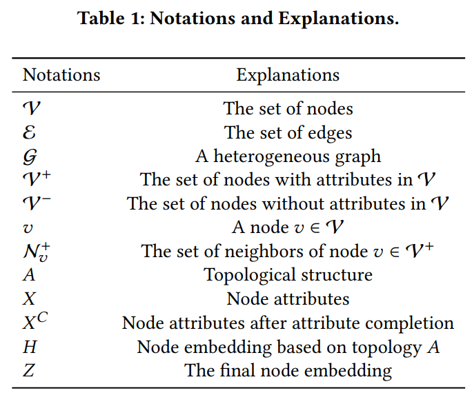
三、方法
HGNN-AC遵循的原则是一个无属性节点 \(v \in \mathcal{V}^{-}\) 的生成属性应该来自有属性节点 \(v \in \mathcal{V}^{+}\) 。主要思想是利用拓扑信息作为指导，计算节点 \(v \in \mathcal{V}^{-}\) 的直接邻域节点 \(v^{\prime} \in N_{v}^{+}\) 的贡献度，然后根据贡献度补全无属性节点属性。 ### 1. 概述 给定一个异质图 \(\mathcal{G}\) ，首先通过网络的拓扑结构 \(A\) 来计算节点的embedding \(H\) ，然后使用 \(H\) 通过注意力机制计算一个得分，用来确定哪些直接连接的属性节点最适合向无属性节点贡献属性。接着根据这个得分来聚合 \(\mathcal{V}^{+}\) 中节点的属性来补全 \(\mathcal{V}^{-}\) 中节点的属性。为了避免过拟合以及确保补全过程中能够被指导，HGNN-AC首先会随机丢弃一些 \(\mathcal{V}^{+}\) 中节点属性，然后按照同样的补全过程来重建这些被丢弃的属性，这样就会有一个丢弃属性被重建的的loss，使得补全过程是被指导的。最后，将属性完备的节点以及网络拓扑结构 \(A\) 作为新的异质图提供给HIN模型。这个过程是端到端的，模型的整体loss就是HIN模型预测loss+属性重建loss。下图展示了模型整体架构：
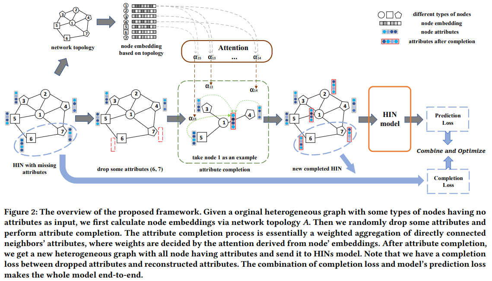 ### 2.拓扑Embedding的预学习 在异质图中，每个节点都有拓扑信息，但不一定有属性信息。同质性是指相似实体之间的联系比不同实体之间的要强。由于网络同质性的存在，拓扑和属性信息总是表达相似或相同的语义。考虑到这一点，我们假设节点的拓扑信息之间的关系能够很好地反映节点的属性信息之间的关系。在本文中，HGNN-AC采用现有的异构图embedding方法，如metapath2vec或HHNE，得到基于网络拓扑的节点embedding。然而这些基于skip-gram的方法总是使用单个meta-path，可能会忽略一些有用的信息。为了得到更好的embedding，HGNN-AC首先根据常用的多个meta-path通过随机游走获得更全面的节点序列，然后将这些序列输入到skip-gram模型中学习节点嵌入。 ### 3.使用attention机制进行属性补全 先前的一些补全缺失属性的方式是平均聚合直接相邻邻居节点的属性，但我们注意到每个节点的直连邻居节点在属性聚合中具有不同的重要性，这主要是因为它们的局部拓扑结构不同，也就是说，一个节点的邻居越多，它对每个邻居的重要性就越低。
本文采用的方法是得到节点embedding（节点embedding是根据图的拓扑结构得到的）后，HGNN-AC采用注意力机制自动学习不同直接邻居的重要性，然后从集合 \(\mathcal{V}^{+}\) 中的一阶邻居聚合属性信息来补全 \(\mathcal{V}^{-}\) 中的属性信息。
给定直接相连的节点对 \((v,u)\) ，attention层可以学习到节点 \(u\) 对节点 \(v\) 的重要性 \(e_{u v}\) ： \[e_{v u}=\operatorname{att}\left(h_{v}, h_{u}\right)\] \(h_{v}, h_{u}\) 是节点的拓扑embedding， \(u \in \mathcal{V}^{+}\) 。
进一步的，HGNN-AC采用masked attention机制，意味着我们只计算 \(u \in N_{v}^{+}\) 的 \(e_{v u}\) ， \(N_{v}^{+}\) 是 \(\mathcal{V}^{+}\) 中节点 \(v\) 的一阶邻域。具体的： \[e_{v u}=\sigma\left(h_{v}^{T} W h_{u}\right)\] \(W\) 是参数矩阵， \(\sigma\) 是激活函数。获得所有邻居的得分后，使用softmax函数进行标准化： \[a_{v u}=\operatorname{softmax}\left(e_{v u}\right)=\frac{\exp \left(e_{v u}\right)}{\sum_{s \in \mathcal{N}\_{v}^{+}} \exp \left(e_{v s}\right)}\] 然后执行加权聚合： \[x_{v}^{C}=\sum_{u \in \mathcal{N}\_{v}^{+}} a_{v u} x_{u}\] 如果 \(v\) 没有有属性邻居节点，也就是 \(N_{v}^{+}=\phi\) ，那么我们将 \(v\) 的属性向量设置成零向量。但是事实上这种情况很少发生，所以对模型性能影响很小。 更进一步，为了稳定学习过程已经减少高方差（异质图网络具有很高的方差），我们采用multi-head attention，然后聚合的过程就变成了： \[x_{v}^{C}=\operatorname{mean}\left(\sum_{k}^{K} \sum_{u \in \mathcal{N}\_{v}^{+}} a_{v u} x_{u}\right)\] ### 4.已有属性的Drop 有一个问题，我们如何确保属性补全的过程是可学习的，以及生成的属性是正确的？为了解决这个问题，我们随机丢掉 \(\mathcal{V}^{+}\) 中的一些属性，然后按照补全过程重构这些属性，这样丢弃属性和补全属性之间就有一个监督的补全loss，使得补全过程是被指导和可学习的。
具体的，将 \(\mathcal{V}^{+}\) 分成 \(\mathcal{V}\_{drop}^{+}\) 和 \(\mathcal{V}\_{keep}^{+}\) 两部分，由一个超参数 \(\alpha\) 控制划分比例，也就是 \(\left|V_{drop}^{+}\right|=\alpha\left|V^{+}\right|\) 。HGNN-AC首先丢弃 \(\mathcal{V}\_{drop}^{+}\) 中的属性，然后根据 \(\mathcal{V}\_{keep}^{+}\) 中的节点属性重建丢弃的属性。按照前面框架的描述，在这里 \(v\) 来自 \(\mathcal{V}\_{drop}^{+}\) ， \(u\) 来自 \(\mathcal{V}\_{keep}^{+}\) ，同样的multi-head attention也应用在这里。
我们的目标是让重构的属性与原来丢弃的属性尽可能接近，使用euclidean距离作为度量，于是便有一个监督loss： \[\mathcal{L}\_{completion} = \frac{1}{\left|\mathcal{V}\_{drop}^{+}\right|} \sum_{i \in \mathcal{V}\_{drop}^{+}}{\sqrt{({X}\_{i}^{C} - {X}\_{i})^2}} \] ### 5.与HIN模型结合 经过上述过程，我们有了 \(\mathcal{V}^{-}\) 中的补全属性节点以及 \(\mathcal{V}^{+}\) 中的有属性节点，于是所有节点属性定义如下： \[X^{new}= \\{X_i^C,X_j|\forall i \in \mathcal{V}^{-},\forall j \in \mathcal{V}^{+}\\}\] 节点属性 \(X^{new}\) 和拓扑结构 \(A\) ，作为一个新图，输入给HIN模型中： \[ \begin{array}{c} \tilde{Y} =\Phi (A,X^{new}) \\\\ \mathcal{L}\_{prediction}=f(\tilde{Y},Y ) \end{array} \]
\(\Phi\) 代表HIN模型， \(\mathcal{L}\_{prediction}\) 代表预测loss。最后，两个loss相结合，整个模型是端到端的： \[\mathcal{L}=\lambda \mathcal{L}\_{completion} + \mathcal{L}\_{prediction}\] \(\lambda\) 是一个权衡因子。
四、实验
1.数据集
采用三个数据集DBLP，ACM和IMDB。数据集统计信息如下：
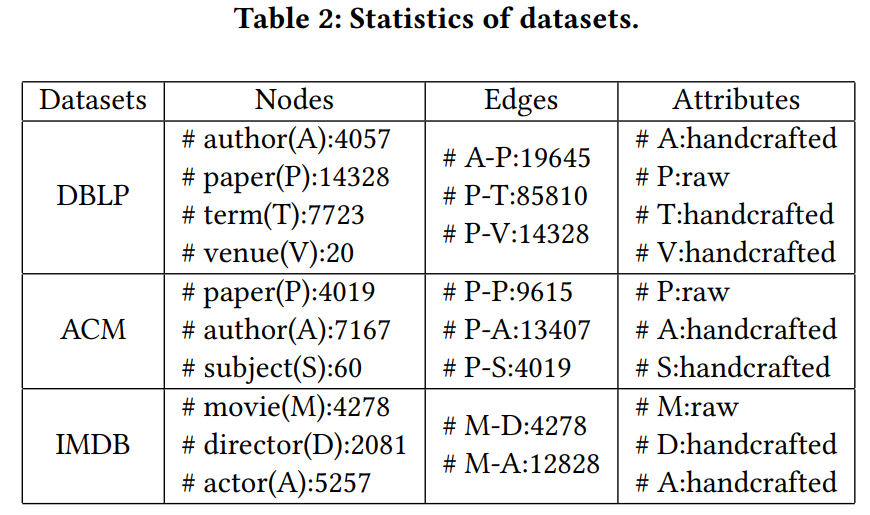 ### 2.实验 实验分为两组： 1. 要分类的节点属性缺失，采用DBLP数据集； 2. 要分类的节点有属性，其余类型节点属性缺失，采用ACM和IMDB数据集。
实验结果如下：
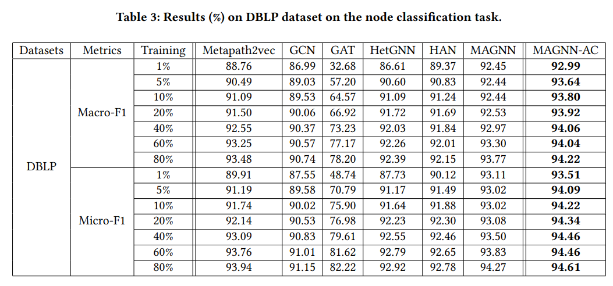
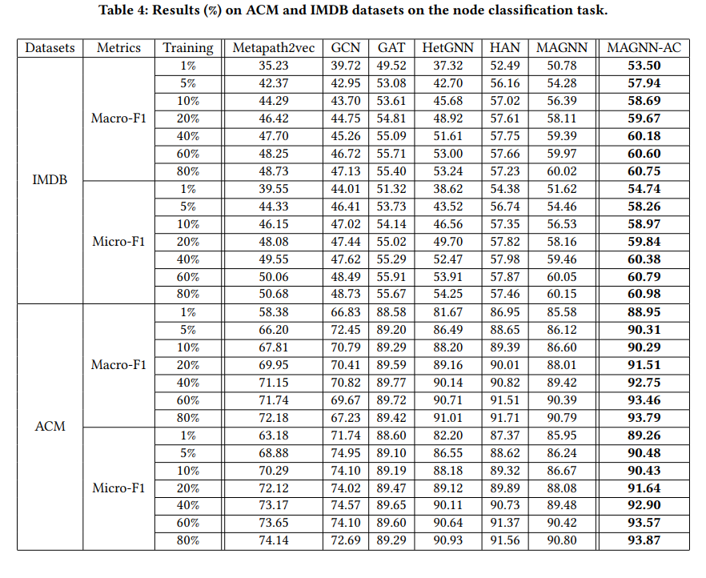
另外在GTN上对比了使用属性补全与不使用的效果:
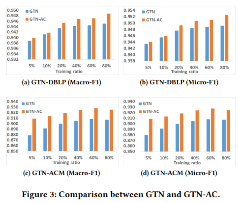
3.结果可视化
使用t-SNE对学习到的节点embedding做了可视化：
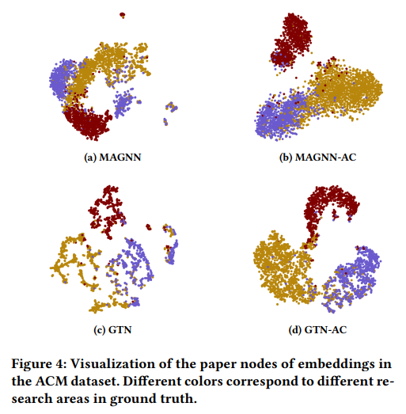
4.个例研究
为了证明补全机制的有效性，采用下列五种配置进行实验对比： * MAGNN：paper节点属性采用关键词的词袋表示，author和subject节点来自于直接相连的paper节点特征的平均聚合； * MAGNN-onehot1：paper节点属性采用关键词的词袋表示，author节点采用one-hot向量表示，subject节点来自于直接相连的paper节点特征的平均聚合； * MAGNN-onehot2：paper节点属性采用关键词的词袋表示，author和subject节点都采用one-hot向量表示； * MAGNN-AC1：paper节点属性采用关键词的词袋表示，author节点采用我们提出的框架补全，subject节点采用one-hot向量表示； * MAGNN-AC2：paper节点属性采用关键词的词袋表示，author和subject节点都采用我们提出的框架补全。
实验结果如下：
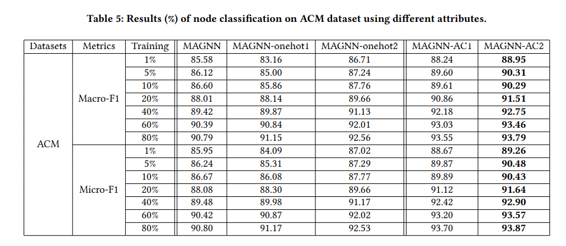
5.参数实验
对比不同超参数的影响：
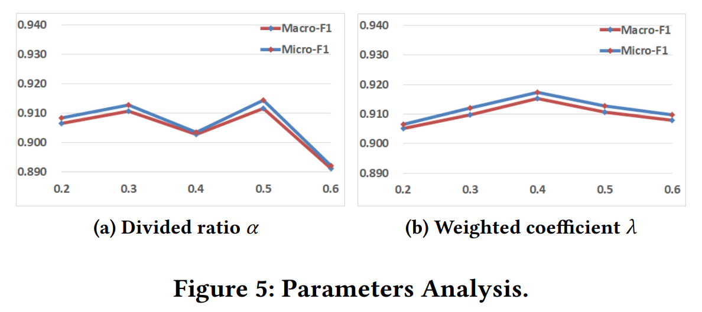